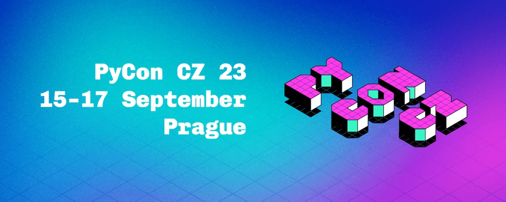

Nástěnka mouder
Otázka zní: „Co byste ve dvou až třech větách poradili začátečníkům? Jakou nejdůležitější radu by si měli vyslechnout?“ Odpovídají pokročilí začátečníci i zkušení programátoři.
Posiluj náladu v týmu. Nikdo nečeká, že „napíšeš nejvíc řádek“. Najdi si něco jiného, čím pomůžeš.
Programovat se dá naučit i v češtině.
Nebojte se pochválit sami sebe. Za každým z vás je nějaký příběh a vaše cesta je obdivuhodná. Jste skvělí.
Nepřemýšlej nad tím, jak začít správně. Proště začni. Stejně jako v životě musíš nejprve přetrpět chaos, než je nastolen řád.
Najdi obtížný problém. Pomož lidstvu.
Nevzdávej se.
Nepoužívej v pandas itertools :(
Každá kombinace dovedností je výjimečná. Ergo: dělej, co tě baví!
Tvoje otázky nejsou vůbec hloupé.
Pořád zpochybňuj. Pořád pátrej hlouběji. Pořád se soustřeď na hodnotu. Protože dobrý kód, který nepřináší hodnotu, je BEZCENNÝ!
Neparsujte HTML nebo XML regulárními výrazy.
Pojďme to nasadit! Co se asi tak může stát…
Všechno je snadné, když tomu dáš čas, protože software píší LIDÉ pro LIDI.
Slova uložená v paměti počítače mohou provádět jiné věci v reálném světě. Kouzlo?
Pij víc kávy :)
Nepoužívej placeholder names!
Živ své vášně.
Neboj se ptát „Proč“.
Něco vědět je často méně důležité, než umět si to najít.
Když nevíš, tak se ptej. Nečekej na zázrak z nebe.
Fake it till you make it.
Je úplně OK být po osmi hodinách debugování vytočený.
Programování není žádná magie!
Nepřestávej si hrát.
Řekni si o hodně peněz! Udělej to!
Ukládej si závislosti svého projektu, abys mohla jeho prostředí vytvořit později znovu.
Čti, prosím, dokumentaci.
Pokud „selžeš“, vezme tě další firma :)
Když něco hledáš na internetu, ohranič si to časově. Pokud to nenajdeš, zeptej se.
Udělej to asynchronně!
Hravá mysl a hackerské myšlení - to je naše cesta.
Pokud jsi zvědavý jak něco funguje, nakóduj to namísto použití knihovny. Nakonec tam tu knihovnu ale stejně použij.
Opravdu zkus porozumět problematice, snaž se jít do hloubky.
Jsi čaroděj! Tak čaruj.
Hodně čti!
Sleduj CS50. Získáš dobré základy.
Základní dovednosti: Trpělivost, umět relaxovat, dotahovat detaily.
Chceš být vyjímečný? Chceš aby tě testeři měli rádi? Čti dokumentaci, čti zadání - budeš jeden nebo jedna z mála! :)
Život není pouze o IT, pamatuj na to!
Dvě věci: Kritické myšlení. Vědecký přístup.
Najdi si projekt a hackuj na něm s dalšími lidmi!
Neboj se ptát! Dej vědět o problémech už v raných fázích. Zůstaň zvědavý!
Používej debugger!
Zůstaň hravý.
Chybama se člověk učí. Neboj se je dělat! A pak se z nich vždycky pouč.
Je OK být motivovaný penězi :) (ale je to na prd).
Dovol si být juniorem, nikdo nezačínal jako profík.
Nevědět a neumět je v IT norma. Je třeba se s tím smiřovat. Muset se k potřebným informacím a znalostem dostat, doptat se, nebo se je doučit, je ajťákův denní chléb. A platí to v nějaké míře i pro seniory!
Vždycky to jde naprogramovat líp a rychleji. Ale ty děláš nejlíp, jak umíš. Co víc bys po sobě, prosím tebe, chtěl nebo chtěla? V klidu.
Odpočiň si taky. Nejsi robot.
Networking a konexe se zdají být tou nejdůležitější věcí. Získání hard skills je ta nejjednodušší část, lidi jsou ta nejobtížnější. Bez komunity a kontaktů to bude extrémně těžké, ne však nemožné (autisti nezoufejte).
Pokud se bojíš ptát, připomínej si: Čím dříve se zeptáš, tím kratší dobu budeš blbec.
Tři N. Nevíš? Nevadí. Naučíš se.
Nepřeskakuj z jednoho jazyku na druhý jen kvůli tomu, že jsi se v prvním jazyku dostal do bodu, kdy už to tak lehce nejde. Vytrvej.
Není možné udržet v hlavě vše a pořád, dovol si zapomínat. Technické věci jsou stejně popsané v dokumentaci a na to ostatní jsou poznámky - nauč se je psát a můžeš klidně spát.
Vždycky si budeš připadat, že nic nevíš. Rozdíl mezi víc a míň zkušenými je ten, že zkušenějším je to jedno.
Nezapomínej na ostatní koníčky - obzvlášť ty, kde se setkáváš s lidmi. Odpočatá budeš mít větší motivaci sednout si zpět k počítači. Širší síť kontaktů ti může poskytnout kariérní dveře, které vůbec nečekáš.
Vyber si reálný problém a ten zkus vyřešit.
Není to snadné, ale není to nemožné 🙂 Proces učení je, spíš než sprint, nikdy nekončící procházka. Je normální a OK nevědět, ale důležité je se s tím nespokojit, zjistit a vypátrat, jak problém vyřešit.
Pohovorování je extrémně náhodné. Pohovory, ze kterých mám dobrý pocit jsou často negativní a naopak. Nikdy nevím, co bude „ta správná“ informace, co je zaujme.
Zapojuj se do komunity, která je jako ta na junior.guru. Kuřátko ti dá super tipy, Honza ti dá zázemí Discordu a webu, a ostatní ti dají, co bys jinde na netu hledal těžko. Pokud možno v češtině.
Nesrovnávej se s ostatními a už vůbec ne se seniory. Každý máme jiné podmínky a výchozí pozici. Jediné srovnávání, které dává smysl, je sám se sebou v minulosti versus dneska.
Pokud Tě to baví, tak vím, že to dokážeš.
K úspěchu nestačí být motivován jen penězi. Potřebuješ zápal do IT.
I pád na držku je posun dopředu 🙂
Nepochybuj o sebe, zmena je naozaj možná! ❤️
Ze začátku nespěchej! Lepší když budeš rozvážnější na začátku, zkusíš si různé cesty a až potom si zvolíš to, co tě skutečně baví. Ušetříš tím hodně času, energie, motivace a duševní pohody! 😉 Hodně štěstí!
U programování nezáleží na věku, ale na ochotě učit se novým věcem.
Jak to vzniklo?
Nástěnka začala vznikat v srpnu 2023 na základě spolupráce s PyCon CZ 23. To je největší česká konference věnovaná jazyku Python a zároveň je to vůbec nejpřívětivější akce tohoto typu pro začínající programátory. Nástěnka byla na konferenci v papírové podobě a účastníci mohli přidávat své rady.
